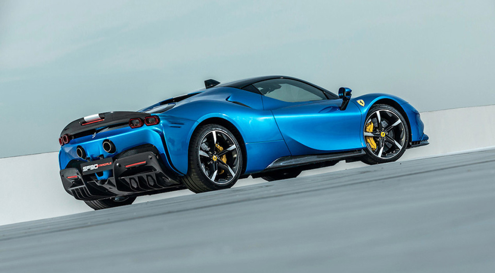

Assetto Fiorano賽道版以 Ferrari 法拉利在 Maranello 自有的 Fiorano 測試賽道而命名，僅憑其名就能了解其內涵：一款專注於賽道性能的車型 。
這是 Ferrari 首次為新車型提供兩種版本以供選擇，但絕不是最後一例。緊接著2020 年推出的 SF90 Spider 及全新上市的六缸混合動力 296 GTB同樣配備獨特的 Assetto Fiorano 賽道版供選擇。 然而，Assetto Fiorano賽道版與其對應跑車有何不同，Ferrari法拉利車輛動態與動力研發負責人Stefano Varisco 解釋：「賽道版的車款從三個概念著手，整體減重、空氣動力學下壓力的顯著提升，以及動態性能的優化，而這種特殊設置是專為在賽道上充分發揮車輛性能而開發。」
SF90 Stradale是第一款具有Assetto Fioranon 賽道版的車型，在車體結構、底盤系統大量運用鈦纖維、鋁合金與輕量複合材質，成功減輕了30公斤的車身重量，而在保持前後軸之間的重量分配，並增加下壓力也同樣重要。
這樣的設計理念可以在SF90 Stradale Assetto Fiorano上更能體會，操駕初期最明顯的回饋，是來自重新設計的懸吊系統。採用源自 GT賽事經驗打造的Multimatic 避震器，懸吊彈簧以鈦金屬精心打造，為整體重量減少8公斤，並提高了穩定性。
專屬配置的碳纖維擾流板可在時速為250公里時產生390公斤的下壓力，加強在高速駕駛時的操控性和精準度，搭配獲得專利的Shut-off Gurney閉合式格尼襟翼，最大限度地減少阻力。 SF90 Stradale Assetto Fiorano還採用鈦合金製造整個排氣管。
更進一步的變化包括後擋風玻璃內的三開口百葉窗，在極端賽道狀況下，可顯著提升動力系統的冷卻，配備的Michelin Pilot Sport Cup 2 輪胎專為提昇在賽道乾燥路面表現而特別設計，具備比標準型輪胎更柔軟的複合成分和更少表面溝槽。
Assetto Fiorano也可以選擇雙色塗裝。SF90 Stradale首席外飾設計師Marc Poulain解釋道 :「我們創建一款能突出Assetto Fiorano特點的縱向塗裝：錘形圖案突出了前鼻元件的倒懸部分，使目光掃向汽車尾部，會不由自主地被後擋風玻璃上的新百葉窗，以及加長的碳纖維擾流板所吸引。
Ferrari首席試車手Raffaele de Simone感動地說道：「簡直太棒了! SF90 Stradale Assetto Fiorano具有非常高效且反應靈敏的完整控制系統，特別是帶有扭矩矢量導引的電動前軸，給人一種迅猛敏捷的感覺，讓整體回饋更輕盈、更緊湊。這是一輛超現代的超級跑車，但完全可以靠感官駕駛，在賽道上能夠手腳並用，感覺與車輛融為一體！」
除了SF90 Stradale和SF90 Spider的Assetto Fiorano版本之外，現在還有一款源自Ferrari 296 GTB全新Assetto Fiorano車型。設計理念保持不變：專為希望擁有最大限度發揮跑車極致動力和性能的客戶所設計。
為此，296 GTB Assetto Fiorano版本配備了基於法拉利GT賽事經驗打造的Multimatic避震器，特別為優化賽道性能打造；安裝於前保險槓上的高下壓力碳纖維附件，可產生額外10公斤的下壓力，以及配有適合賽道駕駛的米其林Sport Cup 2R高性能輪胎。 Lexan後車窗以及其他輕質材料的廣泛應用，如碳纖維門板，大幅減輕了重量。
與SF90 Stradale一樣，訂購Assetto Fiorano版本的車主還可以選擇專屬的特殊塗裝。其靈感來源於250 Le Mans，此款塗裝從前保險桿元件開始，環繞引擎蓋構成錘形圖案，最後一路延伸至車頂及後擾流板，最後擴展到車尾的中央排氣孔。
無論是SF90 Stradale、SF90 Spider或是296 GTB，Assetto Fiorano配置都強調每款車型的獨特性，同時提高了整體賽道性能。